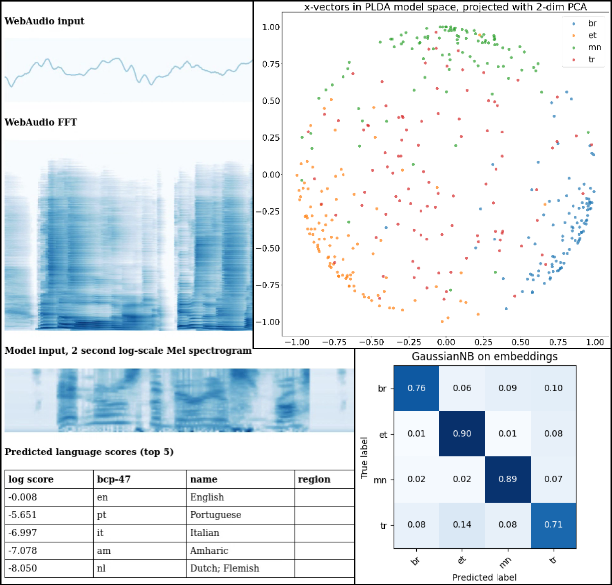

Python toolbox built on top of TensorFlow for end-to-end spoken language identification. I created this toolbox for automating my MSc thesis experiments at Aalto University. The toolbox aims to utilize TensorFlow as much as possible, which provides high performance feature extraction and model training pipelines for huge datasets. The largest speech dataset I used for training a convolutional neural network consisted of 3.2 terabytes of 16 kHz mono waveforms.
Spoken language identification toolbox: lidbox
